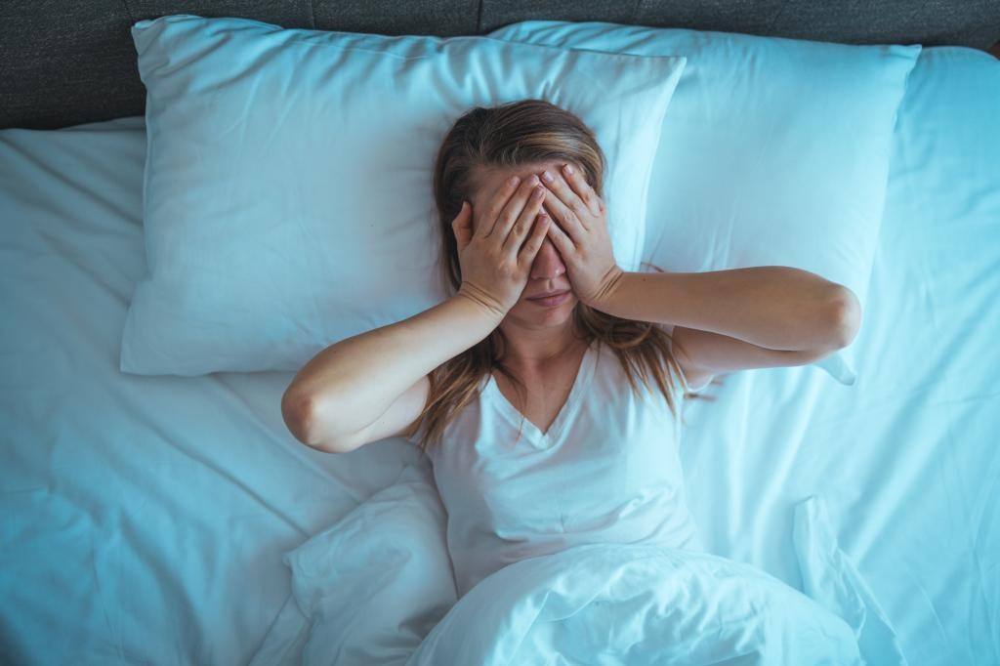

Sleep experts reveal top tips for improving your sleepAnd not getting a good slumber can have serious consequences. “[Extreme] sleep deprivation [can] be harmful to your health,” Dr. Neomi Shah, the program director of sleep medicine at the Icahn School of Medicine at Mount Sinai, told The Post. “We worry about accidents, motor vehicle accidents, occupational accidents or household accidents if you’re sleep-deprived.” Some sufferers turn to over-the-counter medications, such as melatonin, CBD or NyQuil, but experts warn that they should only be used as a temporary solution. Getting to the root of the sleep issue is key in beating it. Here, experts outline four common sleep problems and how to combat them. I can’t fall asleep The problem: You have the best intention for a long night of zzz’s, but you just can’t power down. The solution: Sometimes, this issue is just hitting the hay too early. “Humans have a ‘very basic’ system in the brain that regulates when we sleep and wake,” said Dr. Emmanuel During, an associate professor of neurology at the Icahn School of Medicine at Mount Sinai. “The best habit is really going to bed when you feel sleepy.” Trying to force yourself to sleep can also cause anxiety and just make things worse. During recommends creating a wind-down routine that you follow every night to decompress and prep for zzz’s. Dim the lights and put down your phone. “We have to be in a state of relaxation,” he said. “No activity [and] no deliberate thoughts about any matter related to our life.” Cognitive behavioral therapy, a popular type of psychological treatment that focuses on interventions to deal with negative thoughts and actions, can also be helpful. Some might also consider taking over-the-counter melatonin, but Dr. Mandana Mahmoudi, the clinical director of sleep medicine at NYU Langone Health, said that it’s important to note that just while it’s a natural medication, it should still be thought of as taking a sleeping pill. Proceed with caution. I wake up too early or in the middle of the night The problem: You aim for eight hours, but your eyes open after five and a half or you’re always up during the night. The solution: You may be depressed and could benefit from talk therapy. Spicy, heavy meals before bed can also interfere with sleep, so be cautious about what you’re eating for dinner. In the moment, give yourself a short amount of time to get back to sleep. If it doesn’t work, get up. “If you’re awake for longer than 20 minutes, you want to leave the bedroom, go out and maybe do something kind of calming like a crossword puzzle or read a book that’s maybe not super exciting,” said Thea Gallagher, a clinical assistant professor in the department of psychiatry at NYU Langone Health. She added that the healthiest habit is to only use one’s bedroom for sleep. If it’s already morning, you might want to just get an early jump on things. “Start your day and maybe be productive with your day,” Gallagher said, noting that doing so can help you get back on track the next night. I’m getting eight hours of sleep a night but I’m still exhausted The problem: You get a full night’s rest but feel like you haven’t slept a wink. Your mouth is dry and you may wake up gasping. The solution: See a doctor about a test for sleep apnea, a common but serious disorder in which breathing stops and starts throughout sleep. Luckily, the condition is easily treatable, with sufferers using a CPAP (continuous positive airway pressure) machine, though the device can be cumbersome — and can take some getting used to. Other treatment options include specialized mouth guards or surgery. I’m jet-lagged The problem: You travel to a new time zone, but your sleep schedule stays behind. The solution: After landing, try and stay up to get on local time. “As long as it’s has not been a long time [say 24 hours] since you last slept, it’s reasonable to push through,” Shah said, noting that coffee and keeping busy can help. She advises against using sleep aides like melatonin if you haven’t before. “If you’ve never taken a medicine, you almost never want to take a medicine for the first time [traveling].” Establishing a stable evening routine can help you sleep, experts say. Getty Images/iStockphoto Experts weigh in on sleep problems and how to fix them. Getty Images/iStockphoto Some sleep issues may be signs of anxiety or depression. Getty Images Snoring is sometimes a symptom of sleep apnea. Getty Images/iStockphoto Jet lag is a painful part of traveling, but experts say you can try minimize it. Getty Images/iStockphoto |
 |